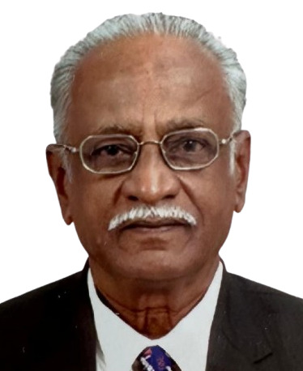
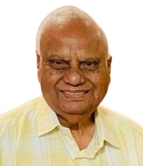

Remembering our departed colleagues with respect and gratitude
Remembering distinguished members of the veterinary fraternity whose lives, service, scholarship, and contributions continue to inspire us.
Remembering an outstanding scholar, teacher and institution builder.
Read Profile →
02Remembering a distinguished parasitologist and inspiring teacher.
Read Profile →
03Remembering a valued colleague and benefactor of veterinary education.
Read Profile →